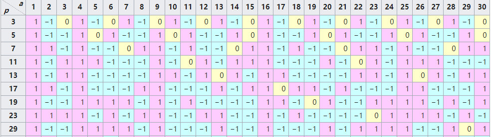
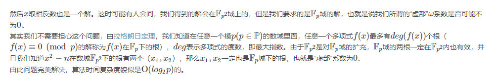

对于同余式
\[x^2 \equiv n \pmod p\]
若对于给定的\(n, P\)，存在\(x\)满足上面的式子，则乘\(n\)在模\(p\)意义下是二次剩余，否则为非二次剩余
我们需要计算的是在给定范围内所有满足条件的\(x\)，同时为了方便，我们只讨论\(p\)是奇质数的情况
证明：\(x^2 \equiv x^2 + 2xp + p^2 \pmod p\)显然成立
我局的参考资料里对于这条性质的证明漏洞很大，所以下面的是自己yy的
根据第一个前置定理的式子，我们只需讨论\(x \in [1, p - 1]\)即可(当\(x=0\)时对应了\(n=0\)的特殊情况)
一个显然的性质是
\[x^2 \equiv (p - x)^2 \pmod p\]
那么当\(x \in [1, \frac{p - 1}{2}]\)我们可以取到所有解。
接下来我们只需要证明当\(x\in[1, \frac{p-1}{2}]\)时\(x^2 \bmod p\)均两两不同
可以用反证法，若存在不同的\(u, v\)满足\(u^2 \equiv v^2 \pmod p\)
那么有\((u + v)(u - v) \equiv 0 \pmod p\)
显然\(-p < u + v < p\)且\(-p < u - v < p\)且\(u + v \not = 0, u - v \not = 0\)，故该假设不成立，故原命题成立。
Q.E.D
记
\[ (\frac{a}{p}) = \begin{cases} 1 , &\text{a在模$p$意义下是二次剩余}\\ -1, &\text{a在模$p$意义下是非二次剩余}\\ 0, &\text{a mod p = 0} \end{cases} \]
这个东西的分布大概是这个样子

计算公式
我局的这个公式就是构造出来的
\[ (\frac{a}{p}) = a^{\frac{p - 1}{2}} \pmod p \]
证明：
费马小定理：对于任意互质的\(x, p\)，有\(x^{p - 1} = 1 \pmod p\)
一条同余式的性质：若\(a^k \equiv b^k \pmod p\)，那么\(a^{kx} \equiv b^{xk} \pmod p\)
然后直接把这玩意儿带到\(x^2 \equiv a \pmod p\)里就行了
这里简单的写一下:
首先要明确我们的目的，我们现在要验证这个公式的正确性，也就是说我们要证明当\(a^{\frac{p-1}{2}}=1 \pmod p\)时满足条件的\(x\)存在，当\(a^{\frac{p-1}{2}}= -1 \pmod p\)时\(x\)不存在，当\(a^{\frac{p-1}{2}}= 0 \pmod p\)时\(a\mod p = 0\)
我们假设有\(x^2 \equiv a \pmod p\)
\[x^{2\frac{p-1}{2}} \equiv a^{\frac{p-1}{2}} \pmod p\]
\[x^{p-1} \equiv 1 \pmod p\]
根据费马小定理\(x\)显然存在，因此\(a\)是模\(p\)意义下的二次剩余
假设有\(x^2 \equiv a \pmod p\)
同理可知
\[x^{p-1} \equiv -1 \pmod p\]
显然\(x\)不存在，因此\(a\)不是模\(p\)意义下的二次剩余
显然有\(a \bmod p = 0\)
这个算法其实用两句话就能说完，但是背后的理论却非常高深(对于我这种菜鸡而言)。
首先使用随机的方法找到一个\((\frac{a^2 - n}{p}) = -1\)，记\(\omega = \sqrt{a^2-n}\)
那么\(x \equiv (a + w)^{\frac{p+1}{2}} \pmod p\)
做完了。。。期望复杂度\(O(\log^2 n)\)
但是实际上实现起来并没有这么简单，因为要自定义类似于虚数的乘法/幂运算
首先要有一点抽代基础(群/环/域什么的要知道定义)
我们来逐步分析这个算法(按照我的叙述风格应该是从发明者的角度出发一步一步推出这玩意儿来，但是十分抱歉我实在是搞不明白他当时的脑回路qwq)
对于第一步，根据前面的定理，如果在\([1, p]\)内随机，每次有\(\frac{1}{p}*\frac{p-1}{2}\)的概率找到一个解，那么期望步数大约为两次，因此复杂度是可以保证的。
但是找到这个东西有什么用呢？。如果我们把之前的数域记做\(\mathbf F_p\)，\(\omega\)在这个数域下是不能开根的，但是我们可以构造一个新的数域\(\mathbf F_p\)，使得\(\omega\)在\(\mathbf F_{p2}\)下能够开根。类比于\(-1\)在复数域下能够表示为\(\sqrt{-1}\)一样。
这样的话\(\mathbf F_{p2}\)内的数都可以写作\(a + k\omega\)的形式。可以证明这玩意儿确实是个合法的域，证明过程，同时也可以证明在\(\mathbf F_{p2}\)下得到的解在\(\mathbf F_{p1}\)下也成立，同时最后的答案中\(\omega\)的系数一定为\(0\)
现在来简单说明一下为什么\(x \equiv (a+\omega)^{\frac{p+1}{2}}\)
先来了解两个性质
证明：
\[
\begin{aligned}
\omega^p &= (a^2-n)^{\frac{p}{2}}\\
&= (a^2 - n)^{\frac{p - 1}{2}} (a^2 - n)^{\frac{1}{2}}\\
&= -\omega
\end{aligned}
\]
证明就直接考虑二项式定理中的组合数展开，发现除了第一项和最后一项之外都无法把\(n!\)消掉。
那么要证明\(x \equiv (a+\omega)^{\frac{p+1}{2}}\)，实际上我们只需要证明\((a+\omega)^{p+1}\equiv n \pmod p\)就行了
\[ \begin{aligned} &(a + \omega)^{p + 1}\\ =&(a + \omega)^p(a + \omega)\\ =&(a - \omega)(a + \omega)(\text{根据费马小定理$a^p \equiv p \pmod p$})\\ =&(a^2 - \omega^2)\\ =&(a^2 - (a^2 - n))\\ =&n \end{aligned} \]
算法的大概思想就讲完了，下面煮个栗子~。
对于\(x^2 \equiv n \pmod p\)
假设此时\(p=13, n = 10\)。
首先要找到一个\(a\)满足\((\frac{a^ - 10}{13}) = -1\)，然后脸黑的attack在经过1e9 +7次尝试后终于找到了一个\(a =2\)它满足条件，因为\((\frac{7}{13}) = -1\)此时\(\omega = \sqrt{a^2 - n} = \sqrt{-6}\)
按照老祖宗讲给我们的
\(x \equiv (2 + \sqrt{-6})^{7} \pmod {13}\)
\[ \begin{aligned} &\left(2+{\sqrt {-6}}\right)^{2}=4+4{\sqrt {-6}}-6=-2+4{\sqrt {-6}}\\ &\left(2+{\sqrt {-6}}\right)^{4}=\left(-2+4{\sqrt {-6}}\right)^{2}=-1-3{\sqrt {-6}}\\ &\left(2+{\sqrt {-6}}\right)^{6}=\left(-2+4{\sqrt {-6}}\right)\left(-1-3{\sqrt {-6}}\right)=9+2{\sqrt {-6}}\\ &\left(2+{\sqrt {-6}}\right)^{7}=\left(9+2{\sqrt {-6}}\right)\left(2+{\sqrt {-6}}\right)=6. \end{aligned} \]
然后不难发现\(36 \equiv 10 \pmod {13}\)
同时因为平方的性质，\(-x\)也是一个合法解，因此\(-6 + 13 = 7\)也是合法的
最后有一个小问题就是为什么最后\(\omega\)的系数一定是\(0\)，参考资料中给出的解释我实在是不能理解，如果有看得懂的大佬欢迎给本菜鸡讲一下qwq

#include<bits/stdc++.h>
using namespace std;
const int mod = 13;
namespace TwoRemain {
template <typename A, typename B> inline int add(A x, B y) {if(x + y < 0) return x + y + mod; return x + y >= mod ? x + y - mod : x + y;}
template <typename A, typename B> inline void add2(A &x, B y) {if(x + y < 0) x = x + y + mod; else x = (x + y >= mod ? x + y - mod : x + y);}
template <typename A, typename B> inline int mul(A x, B y) {return 1ll * x * y % mod;}
template <typename A, typename B> inline void mul2(A &x, B y) {x = (1ll * x * y % mod + mod) % mod;}
int fmul(int a, int p, int Mod = mod) {
int base = 0;
while(p) {
if(p & 1) base = (base + a) % Mod;
a = (a + a) % Mod; p >>= 1;
}
return base;
}
int fp(int a, int p, int Mod = mod) {
int base = 1;
while(p) {
if(p & 1) base = fmul(base, a, Mod);
p >>= 1; a = fmul(a, a, Mod);
}
return base;
}
int f(int x) {
return fp(x, (mod - 1) >> 1);
}
struct MyComplex {
int a, b;
int cn;
MyComplex operator * (const MyComplex &rhs) {
return {
add(fmul(a, rhs.a), fmul(cn, fmul(b, rhs.b, mod))),
add(fmul(a, rhs.b), fmul(b, rhs.a)),
cn
};
}
};
MyComplex fp(MyComplex a, int p) {
MyComplex base = {1, 0, a.cn};
while(p) {
if(p & 1) base = base * a;
a = a * a; p >>= 1;
}
return base;
}
int TwoSqrt(int n) {
if(f(n) == mod - 1) return -1;
if(f(n) == 0) return 0;
int a = -1, val = -1;
while(val == -1) {
a = rand() << 15 | rand();
val = add(mul(a, a), -n);
if(f(val) != mod - 1) val = -1;
}
return fp({a, 1, val}, (mod + 1) / 2).a;
}
}
using namespace TwoRemain;
signed main() {
cout << TwoSqrt(10);
return 0;
}